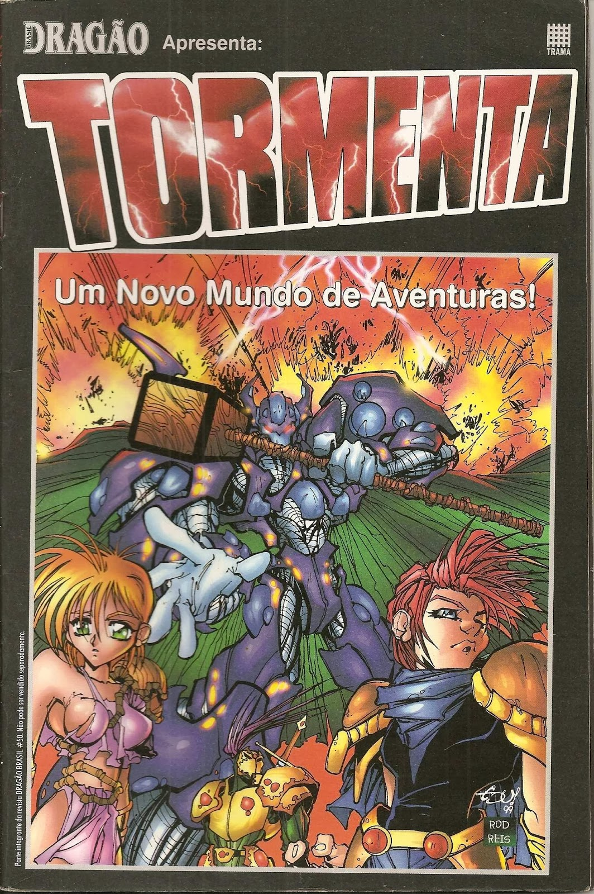
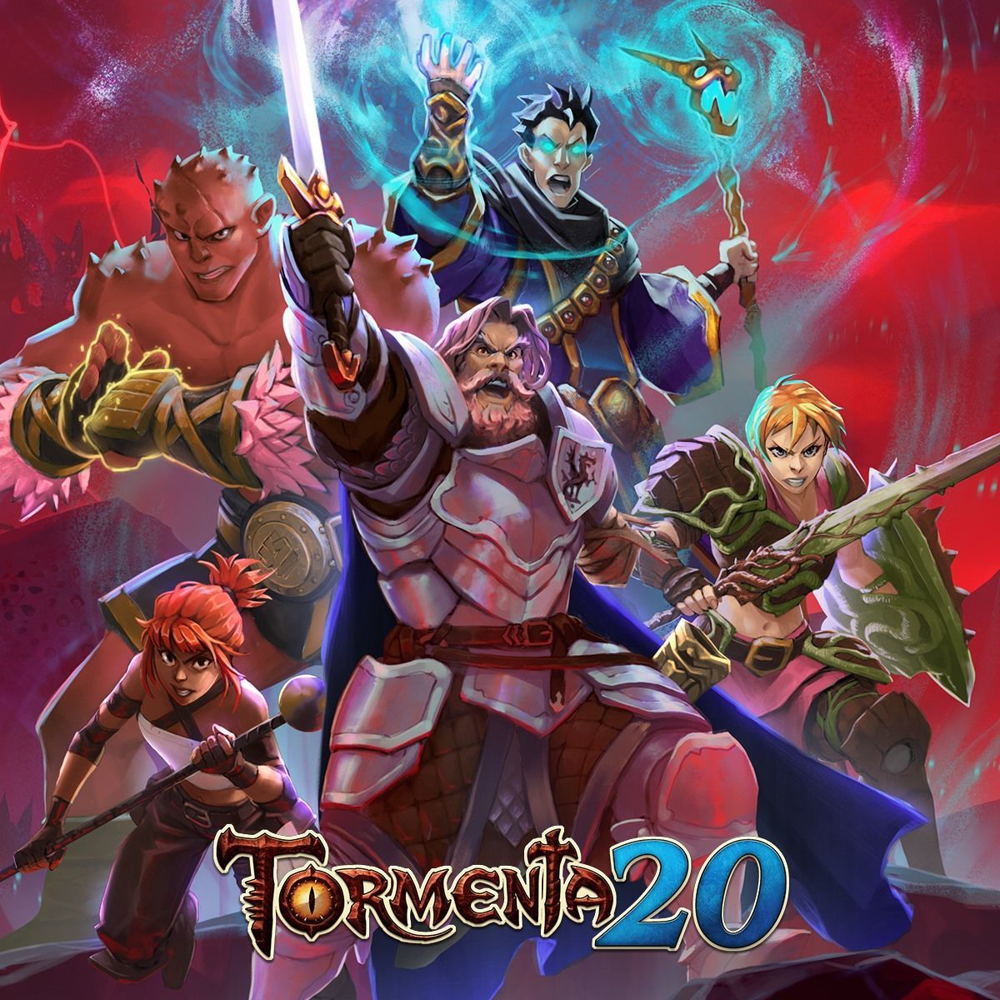

Tormenta é um RPG (Role Play Game), de fantasia medieval e é o rpg mais famoso do Brasil, foi criado em 1999 (Por Marcelo Cassaro, Rogério Saladino e JM Trevisan, conhecidos como Trio Tormenta), nessa época ele era vendido como integração da Revista Dragão Brasil, numa edição especial número 50 dessa revista.
No começo ele servia como cenário para os sistemas D&D e Gurps(Outros Rpgs), mas como o sucesso deste lançamento foi tanto e a procura maior ainda tiveram que fazer muito mais, começaram a fazer diversas matérias sobre o cenário.
Depois de alguns anos do cenário sendo publicado pela Jambô, novos autores passaram a integrar o time principal de desenvolvedores. Atualmente, eles são conhecidos como Quinteto Tormenta, em um grupo que é composto pelos três autores originais, além de Guilherme Dei Svaldi e Leonel Caldela.
Leonel Caldela ao entrar na equipe criou o primeiro romance, O Inimigo Do Mundo em 2004, o livro se tornou o primeiro volume da Trilogia da Tormenta, que ganhou o segundo volume em 2007, intitulado O Crânio e o Corvo, e um terceiro volume em 2008, com o título O Terceiro Deus.

Com o tempo foram criados diversos livros publicados e o Tormenta se tornava cada vez maior, foi criados além de romances, quadrinhos, e até mesmo um videogame, O Desafio dos Deuses; jogo de ação em plataforma 3D, lançado em 2013, pelo Laboratório de Jogos Digitais da Universidade Feevale em parceria com a Jambô Editora, em uma campanha de financiamento coletivo.

Depois de 20 anos do lançamento do primeiro livro do Tormenta, com publicações ininterruptas, com RPGs, romances, quadrinhos e muitos outros materiais que compõem a riqueza do mundo.
Decidiram para comemorar os 20 anos,abrir uma campanha no catarze para arrecadar dinheiro para a criação de um novo livro da Tormenta,seu jogo terá sua regras remodeladas e sua simplificação, também desejam trazer novas pessoas para esse mundo, segundo os criadores o livro terá textos e ilustrações inéditas compõem o livro que será produzido em edição de luxo, com capa dura, papel de alta qualidade e completamente colorido. eles estabeleceram uma meta de 80 mil Reais para a criação do livro, antes de dar inicio a campanha segundo eles pensavam que dificílmente passaria os 200 mil Reais, mas os 80 mil já tinham sido pagos em 1 hora e em um dia já passava dos 300 mil, seu arreacadamento total foi de R$ 1.918.486,00 e foi apoiado por 6353 pessoas, o que os trás uma média de 300 Reais por pessoa, embora 35 lojas apoiaram com mais de 900 Reais, e 148 pessoas apoiaram com 800, o grande sucesso na arecadação fará o livro ficar disponível de maneira digital em dezembro de 2019 e de maneira física em janeiro de 2020, além de um grande quantidade de materiais produzidos anunciaram também um curta-metragem com direção de Fernado Sanches no momento sem data de lançamento.
